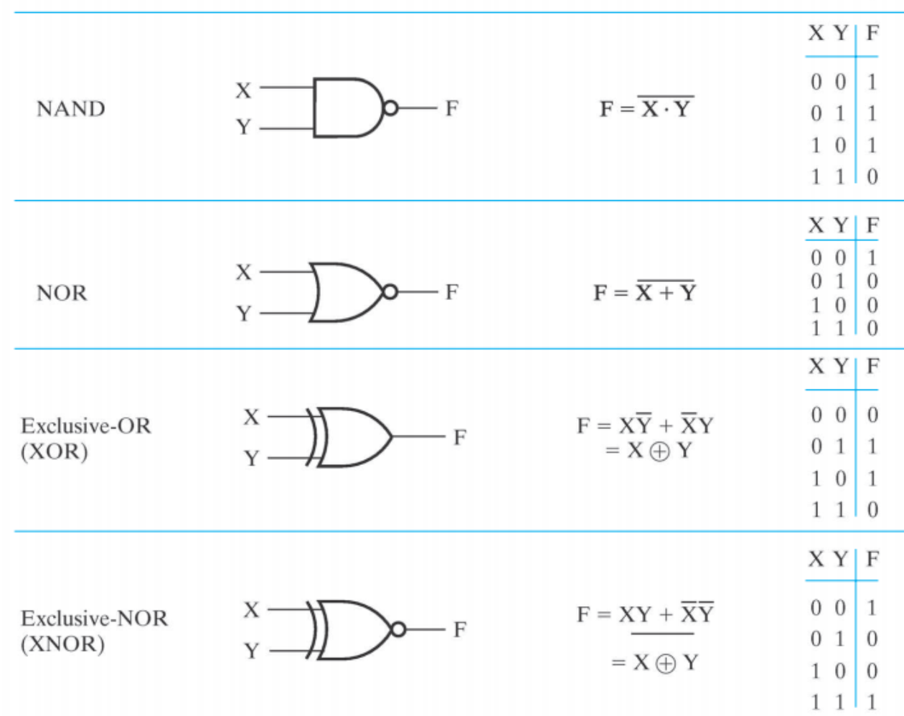

<!DOCTYPE html>
<html lang="en">
  <head>
    <meta charset="utf-8" />
    <meta name="viewport" content="width=device-width, initial-scale=1.0, maximum-scale=1.0, user-scalable=no" />

    <title>Number Systems and Boolean Algebra</title>
    <link rel="shortcut icon" href="./favicon.ico" />
    <link rel="stylesheet" href="./dist/reset.css" />
    <link rel="stylesheet" href="./dist/reveal.css" />
    <link rel="stylesheet" href="./dist/theme/serif.css" id="theme" />
    <link rel="stylesheet" href="./css/highlight/tomorrow-night-bright.css" />


  </head>
  <body>
    <div class="reveal">
      <div class="slides"><section  data-markdown><script type="text/template">

<link rel="stylesheet" href="custom.css">

# LCDF

<br>

## Week 1: Number Systems and Boolean Algebra

</script></section><section ><section data-markdown><script type="text/template">

# Part 1 

<br>

# Number Systems

</script></section><section data-markdown><script type="text/template">

## Representation

<br>

- A number with $radix\ r$ is represented by a string of digits:
  $$
  A_{n-1}A_{n-2}\dots A_{1}A_{0}.A_{-1}A_{-2}\dots A_{-m+1}A_{-m}
  $$
  where $0\leq{A_i}<r$ and $.$ is the ***radix point***
  
- The string of digits represents the power series:
  $$
  Number_r=(\Sigma_{i=0}^{i=n-1}A_i\cdot{r^i}+\Sigma_{j=-m}^{j=-1}A_j\cdot{r^j})
  $$

</script></section><section data-markdown><script type="text/template">

## Binary Arithmetic

<br>

- Single Bit Addition with Carry
- Mutiple Bit Addition
- Single Bit Subtraction with Borrow
- Mutiple Bit Subtraction
- Multiplication
- BCD Addition

</script></section><section data-markdown><script type="text/template">

### Single Bit Subtraction with Borrow


</script></section><section data-markdown><script type="text/template">

### Mutiple Bit Binary Subtraction


</script></section><section data-markdown><script type="text/template">

### Binary Multiplication 


</script></section><section data-markdown><script type="text/template">

### Converting Decimal to Binary

<br>

- **Method 1**
  - **Subtract the largest power of 2** not exceed the number
  - Repeat, subtracting from the prior remainder and recording the power, until the remainder is zero
  - **Place 1's in the positions in the binary result** corresponding to the powers recorded; in all other positions place 0's

</script></section><section data-markdown><script type="text/template">

#### Method 1


</script></section><section data-markdown><script type="text/template">

### Converting Decimal to Binary (Cont.)

<br>

- **Method 2**
  - Convert the **Integer Part**
  - Convert the **Fraction Part**
  - Join the two results with a radix point

</script></section><section data-markdown><script type="text/template">

### Conversion Details

- To Convert the **Integral Part**:

  **Repeatedly divide** the number by the new radix and **save the remainders**. The digits for the new radix are the remainders in **reverse order** of their computation. If the new radix is more than 10, then convert all remainders exceed 10 to digits A, B, ...

- To Convert the **Fraction Part**:

  **Repeatedly multiply** the fraction by the new radix and **save the integer digits** that result. The digits for the new radix are the Integer digits in **order of their computation**. If the new radix is more than 10, then convert all integers exceed 10 to digits A, B, ...

</script></section><section data-markdown><script type="text/template">

### Example: Convert $46.6875_{10}$ To Base 2

- **Convert 46 to Base 2**

  $46_{10}=101110_2$

- **Convert 0.6875 to Base 2**

  $0.6875_{10}=0.1011_2$

- **Join the results** together with the radix point:

  radix point:

  $46.6875_{10}=101110.1011_2$

</script></section><section data-markdown><script type="text/template">

### Q: What if the fractional part can't become 0 as a result of the repeated multiplications?

</script></section><section data-markdown><script type="text/template">

### Solution: Specify number of bits to right of radix point and round or truncate to this number.

</script></section><section data-markdown><script type="text/template">

### Octal (Hexadecimal) to Binary and Back

- **Example:**

$(67.731)_8=110\ 111.111\ 011\ 001_2$

$(312.64)_8=011\ 001\ 010.110\ 100_2=11001010.1101_2$

$11\ 111\ 101.010\ 011\ 11_2=(375.236)_8$

$10\ 110.11_2=(26.8)_8$

$(3\rm{AB}4.1)_{16}=0011\ 1010\ 1011\ 0100.0001_2$

$(21\rm{A}.5)_{16}=0010\ 0001\ 1010.0101_2$

$1001101.01101_2=0100\ 1101.0110\ 1000_2=(4\rm{D}.68)_{16}$

$110\ 0101.101_2=(65.\rm{A})_{16}$

</script></section><section data-markdown><script type="text/template">

### Q: How many bits are required to represent **decimal digits** with a binary code?

</script></section><section data-markdown><script type="text/template">

### Solution: $\lceil log_2{10} \rceil=4$

<br>

- Generally, Given M elements to be presented by a binary code, the minimum number of bits, $n$, needed, satisfies the following relationships:
  $$
  2^n\geq{M}>2^{n-1}
  $$
  $n=\lceil{log_2{M}}\rceil$, where $\lceil x \rceil$ called the ***ceiling function***, is the integer greater than of equal to x

</script></section><section data-markdown><script type="text/template">

### More Binary Codes

<br>

- You can represent 4 elements in $radix\ r=2$ with $n=2$ digits: (00, 01, 10, 11).

- You can represent 4 elements in $radix\ r=2$ with $n=4$ digits: (0001, 0010, 0100, 1000).

- This second code is called a **"One-hot code"**.

- One-hot encoding consists in using one bit representing each state.

</script></section><section data-markdown><script type="text/template">

### More Binary Codes (Cont.)


</script></section><section data-markdown><script type="text/template">

### Binary Coded Decimal (BCD)

<br>

- The BCD code is the 8, 4, 2, 1 code.
- 8, 4, 2, and 1 is weights
- BCD is a **weighted code**
- This code is the simplest, most intuitive binary code for decimal digits and uses the same powers of 2 as a binary number, but only encodes the first ten values from 0 to 9

</script></section><section data-markdown><script type="text/template">

### Q: How to distinguish between Conversion and Coding?

</script></section><section data-markdown><script type="text/template">

### Conversion or Coding?

<br>

- **Conversion** is to convert a decimal number into a binary number.
- **Coding** is to convert every decimal digit into a binary number.
- $13_{10}=1101_2$ (This is **Conversion**)
- $13 \Leftrightarrow 0001|0011$ (This is **Coding**)

</script></section><section data-markdown><script type="text/template">

### Example: Add $2905_{\rm{BCD}}$ to $1897_{\rm{BCD}}$

</script></section><section data-markdown><script type="text/template">


</script></section><section data-markdown><script type="text/template">

### Error-Detection Methods

<br>

- **Parity Bit Error-Detection Codes**
  - **Parity** is an extra bit appended onto the code word to make the number of 1's odd or even.
  - **Even Parity**: the number of 1's in the code word is even.
  - **Odd Parity**: the number of 1's in the code word is odd.

</script></section><section data-markdown><script type="text/template">


</script></section><section data-markdown><script type="text/template">

### Gray Code


</script></section><section data-markdown><script type="text/template">

### Conversion from Binary Code to Gray Code

- Let Binary code be $b_3b_2b_1b_0$. Then the Gray code can be obtained as follows:

  $g_3=b_3$

  $g_2=b_3 \oplus b_2$

  $g_1=b_2 \oplus b_1$

  $g_0=b_1 \oplus b_0$
  
  


<div style="text-align: center;">
    <span style="font-weight: bold; font-style: italic;">Figure</span>. Convert Binary code 11101 into Gray code
</div>
</script></section></section><section ><section data-markdown><script type="text/template">

# Part 2 

# Boolean Algebra

</script></section><section data-markdown><script type="text/template">

## Logical Operation

<br>

- The three basic logical operations are:
  - **AND**
  - **OR**
  - **NOT**
- **AND** is denoted by a dot ( $\cdot$ )
- **OR** is denoted by a plus ( + )
- **NOT** is denoted by an overbar ( $ \overline{} $ ), a single quote mark ( ' ), or ( ~ ) before the variable

</script></section><section data-markdown><script type="text/template">

## Logic Gates

<br>


</script></section><section data-markdown><script type="text/template">

### Other Commonly Used Logic Gates



</script></section><section data-markdown><script type="text/template">

### Universal Gate


</script></section><section data-markdown><script type="text/template">

### Logic Diagrams and Expressions


<div style="text-align: center;">
    <span style="font-weight: bold; font-style: italic;">Truth tables and waveforms are unique, while equations and diagrams are not</span>. 
</div>

</script></section><section data-markdown><script type="text/template">

## Boolean Algebra


</script></section><section data-markdown><script type="text/template">

### Duality rules

<br>

- The **dual of an algebraic expression** is obtained by interchanging $+$ and $\cdot$ and interchanging 0's and 1's, while **variable don't be inverted**

- Seek the dual of a function, **the operation order keep as same as the origin function**
- The identities appear in dual pairs. When there is only one identity on a line the identity is **self-dual**. i.e., the dual expression = the original expression.
- Unless it happens to be self-dual, the dual of an expression **does not equal to** the expression itself.

</script></section><section data-markdown><script type="text/template">

### Duality rules (Cont.)

- Example: $F=(A+\overline{C})\cdot{B}+0$

  Dual: $F=(A\cdot\overline{C}+B)\cdot{1}=A\cdot\overline{C}+B$

- Example: $G=X\cdot{Y}+(\overline{W+Z})$

  Dual: $G=((X+Y)\cdot{\overline{(W\cdot{Z})}})=(X+Y)\cdot{(\overline{W}+\overline{Z})}$

- Example: $H=A\cdot{B}+A\cdot{C}+B\cdot{C}$

  Dual: $H=(A+B)\cdot{(A+C)}\cdot{(B+C)}$

</script></section><section data-markdown><script type="text/template">

### Duality rules (Cont.)

- If the function G is the dual of F, then F is also G of duality. G and F is **mutually duality formula**.

- If the two logical functions F and G are equal, then the duality formula F' and G' **are the same**.

- Example:

  $X+XY=X \Leftrightarrow X(X+Y)=X$   (**Absorption**)

  $X(Y+Z)=XY+XZ \Leftrightarrow X+YZ=(X+Y)(X+Z)$   (**Distributive**)

</script></section><section data-markdown><script type="text/template">

### Complementing Functions

-  For logic function F, interchange $+$ and $\cdot$ operators and **complement each constant value
  and literal**, then obtained the new function is the **inverse function** of the original function,
  referred to as: $\overline{F}$

- Example

  $F=\overline{A}B+C\overline{D} \Leftrightarrow \overline{F}=(A+\overline{B})(\overline{C}+D)$

  $F=\overline{X}Y\overline{Z}+X\bar{Y}\bar{Z} \Leftrightarrow \overline{F}=(X+\overline{Y}+Z)(\overline{X}+Y+Z)$

</script></section><section data-markdown><script type="text/template">

### Q1: How to proof $A+A\cdot{B}=A$?

</script></section><section data-markdown><script type="text/template">

### Q2: How to proof $AB+\overline{A}C+BC=AB+\overline{A}C$?

###  (**Consensus Theorem**)

</script></section><section data-markdown><script type="text/template">

### Q3: How to proof $\overline{(X+Y)}Z+X\overline{Y}=\overline{Y}(X+Z)$?

</script></section><section data-markdown><script type="text/template">

### Useful Theorems


</script></section><section data-markdown><script type="text/template">

### Example1: Simplify Expression

### $F=AB+\overline{A}CD+\overline{A}BD+\overline{A}C\overline{D}+ABCD$

</script></section><section data-markdown><script type="text/template">


</script></section><section data-markdown><script type="text/template">

### Example2: Simplify Expression

### $L=AB+A\overline{C}+\overline{B}C+\overline{C}B+\overline{B}D+\overline{D}B+ADE(F+G)$

</script></section><section data-markdown><script type="text/template">


</script></section></section></div>
    </div>

    <script src="./dist/reveal.js"></script>

    <script src="./plugin/markdown/markdown.js"></script>
    <script src="./plugin/highlight/highlight.js"></script>
    <script src="./plugin/zoom/zoom.js"></script>
    <script src="./plugin/notes/notes.js"></script>
    <script src="./plugin/math/math.js"></script>
    <script>
      function extend() {
        var target = {};
        for (var i = 0; i < arguments.length; i++) {
          var source = arguments[i];
          for (var key in source) {
            if (source.hasOwnProperty(key)) {
              target[key] = source[key];
            }
          }
        }
        return target;
      }

      // default options to init reveal.js
      var defaultOptions = {
        controls: true,
        progress: true,
        history: true,
        center: true,
        transition: 'default', // none/fade/slide/convex/concave/zoom
        slideNumber: true,
        plugins: [
          RevealMarkdown,
          RevealHighlight,
          RevealZoom,
          RevealNotes,
          RevealMath
        ]
      };

      // options from URL query string
      var queryOptions = Reveal().getQueryHash() || {};

      var options = extend(defaultOptions, {"width":1600,"height":900,"margin":0.04,"transition":"fade","slideNumber":true}, queryOptions);
    </script>


    <script>
      Reveal.initialize(options);
    </script>
  </body>
</html>
